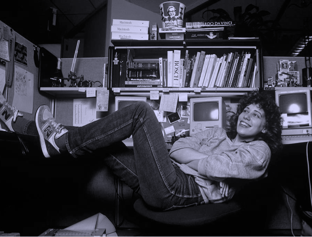

Invitadas/os estelares


Un podcast que explora el mundo de la programacion. Nuevos episodios, todos los jueves cada 15 días.
Our posturings, our imagined self-importance, the delusion that we have some privileged position in the Universe, are challenged by this point of pale light. Our planet is a lonely speck in the great enveloping cosmic dark. In our obscurity, in all this vastness, there is no hint that help will come from elsewhere to save us from ourselves..

Trabajo Remoto
Repensando la programacion
Bases de codigo
Seguridad Informatica
¿Querés las últimas novedades?